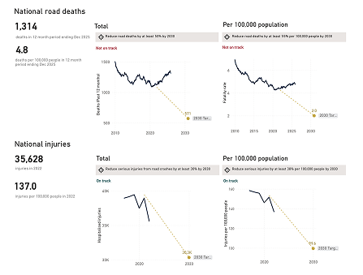
FeaturedNational Road Safety Tracker
Explore how Australia is tracking on national strategic targets for 2030.
A handoff reference for templates, foundations, components, and page patterns.
Start Here
These are the highest-value references for build handoff. For a Drupal developer, scan this section first to understand the intended page families, then use the sections below to confirm the design decisions that sit underneath them.
Page templates
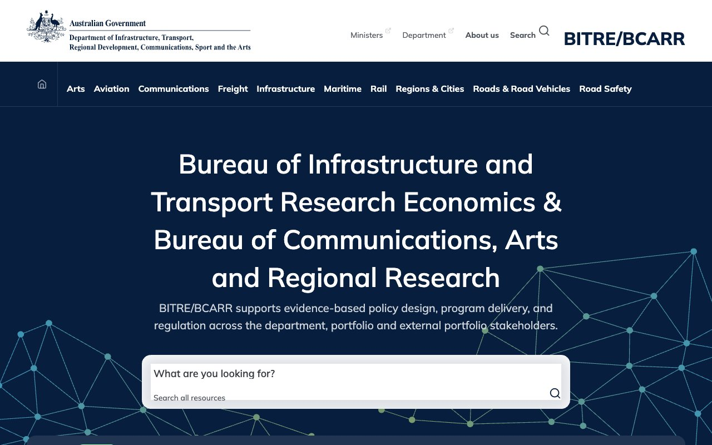
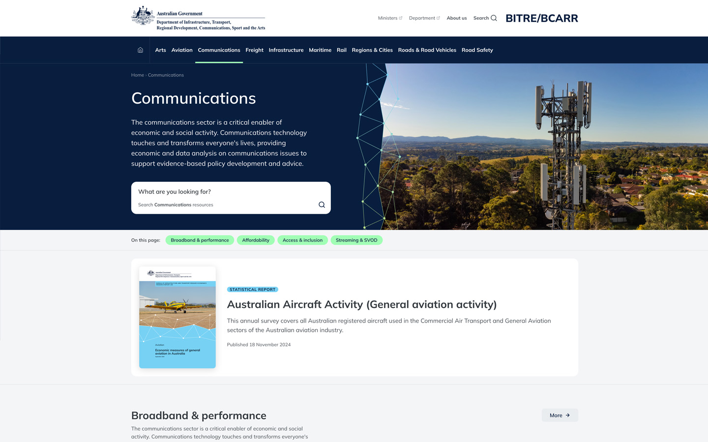
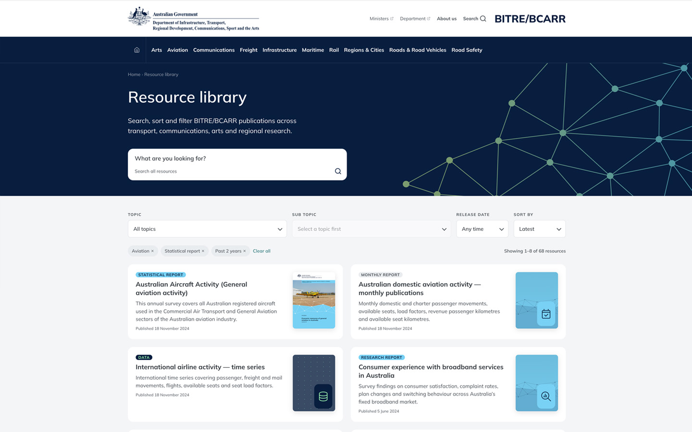
data-article-type on .article__body to auto-swap cover image and badge. See badges section 2.2 for type map.Foundations
These values should stay stable across templates and components. They define the visual language of the system and are the best place to sanity-check consistency before implementation starts.
1.1 — Colours
Brand
Neutrals
UI Semantic
1.2 — Spacing scale
1.3 — Type scale
1.4 — Border radius
Core Elements
This section covers the smallest reusable UI pieces: headings, text styles, and badges. These are the building blocks that all larger components depend on.
2.1 — Typography
Body text — The quick brown fox jumps over the lazy dog. This is how standard body copy renders across all breakpoints. Line height and measure are optimised for readability.
Small body text — 14px. Used for captions, labels, and supplementary information throughout the design system.
Inverse body text on dark background — used inside the hero, alert, and subscribe banner components.
2.2 — Badges
Add badge--link to make a badge a clickable link with a subtle white overlay on hover.
Article publication type → badge + default cover
On templates/article.html, set data-article-type on .article__body — JS auto-updates the cover image and type badge to match.
| data-article-type | Default cover | Badge variant | Preview |
|---|---|---|---|
| Annual Report | Annual Report.png | badge--blue | Annual Report |
| Monthly Report | Monthly Report.png | badge--blue | Monthly Report |
| Research Report | Research Report.png | badge--blue | Research Report |
| Dashboard | Dashboard.png | badge--lime | Dashboard |
| Statistics | Statistics.png | badge--teal | Statistics |
| Data | Data.png | badge--navy | Data |
Reusable Components
These are combinations of core elements that are likely to recur throughout the site. Showing them both as standalone components and in richer contexts makes the handoff more useful than a pure style tile.
3.1 — Card (featured) — hover to see gradient twist + text colour change

FeaturedExplore how Australia is tracking on national strategic targets for 2030.
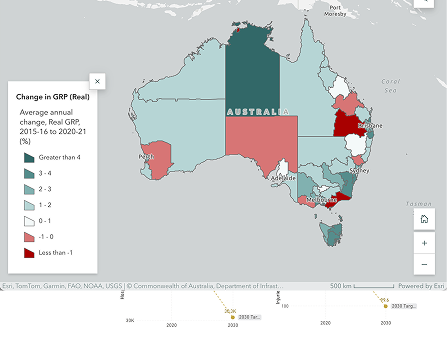
FeaturedGross Regional Product (GRP) is an estimate of each region's unique contribution to the national economy.
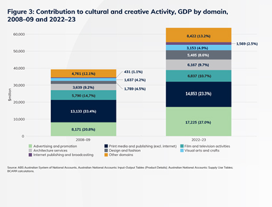
FeaturedExplore Australia's cultural economy: $67.4b in 2023–24, growing 6.6%.
3.2 — Card (report / portrait cover) — hover for lift
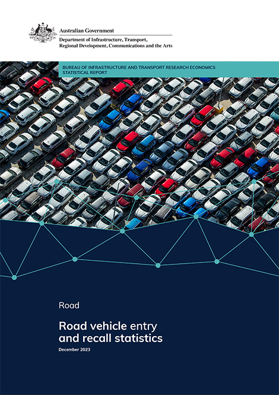
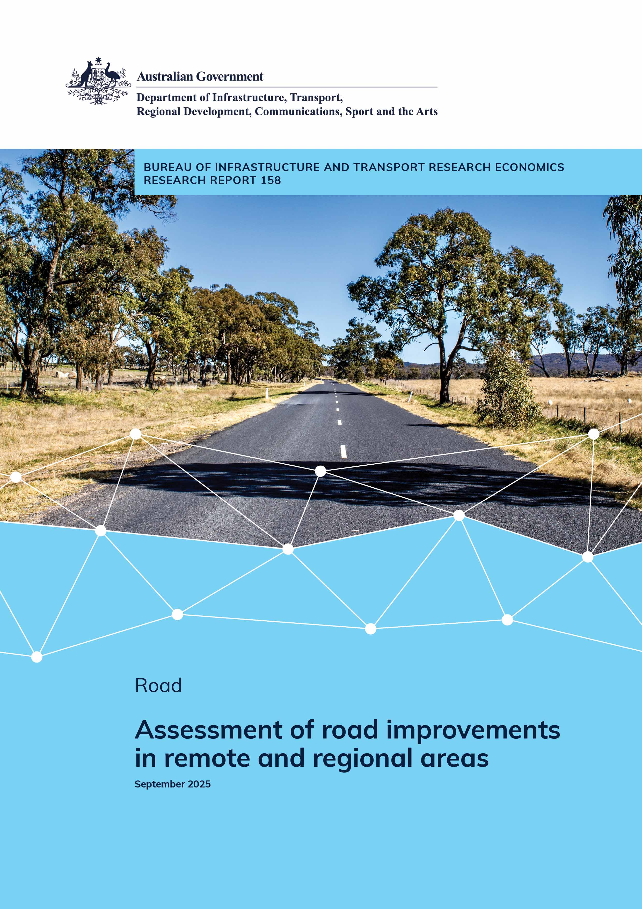
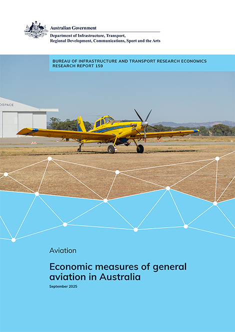
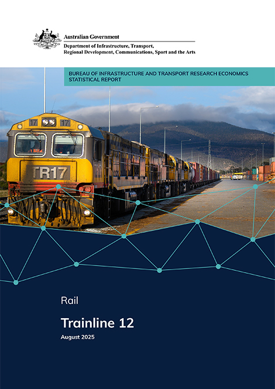
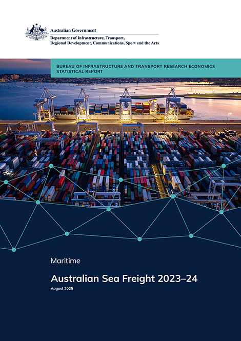
3.3 — Card (data hub) — hover for gradient twist + underline
Provides national road safety dashboards, crash data, performance tracking, and interactive tools that supplement BITRE/BCARR's Road Safety statistics.
Visit data hubAggregates and visualises Australia's freight data across road, rail, air, and maritime. Includes freight movement datasets, mapping tools, and dashboards.
Visit data hubOffers widely used datasets and tools focused on regional Australia — population, housing, economy, social outcomes, and more. Supports regional planning and analysis.
Visit data hub3.4 — Search box
Default
Hero variant
3.5 — Card (resource-featured) — H2 heading, intro body, portrait cover
This annual survey covers all Australian registered aircraft used in the Commercial Air Transport and General Aviation sectors of the Australian aviation industry.
Published 18 November 2024
3.6 — Card (topic-resource) — float cover, text wrap, badge + title + excerpt + date
Interactive dashboard tracking broadband speeds, latency, congestion, and provider performance across Australia.
Updated monthly

Examines access to broadband, mobile connectivity, and digital skills among communities outside metropolitan areas, drawing on survey and administrative data.
Published 4 March 2024
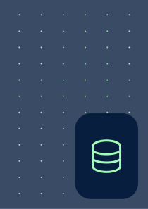
Tracks the number of fixed broadband services in operation by technology type, provider, and state, updated each quarter.
Published 10 October 2024
3.7 — Page nav — sticky anchor links, horizontal scroll on mobile
Used on topic landing pages. Scrolls horizontally on mobile/tablet. Active state shown on the second link.
Page Patterns
Larger sections work best when previewed close to real page width and rhythm. That helps a developer understand not just the component itself, but also how it behaves in the flow of a page.
4.1 — New Releases
Shown below at full width. Horizontal scroll on mobile/tablet, 5-column grid at desktop.
4.2 — Data Hubs
Provides national road safety dashboards, crash data, performance tracking, and interactive tools that supplement BITRE/BCARR's Road Safety statistics.
Visit data hubAggregates and visualises Australia's freight data across road, rail, air, and maritime. Includes freight movement datasets, mapping tools, and dashboards.
Visit data hubOffers widely used datasets and tools focused on regional Australia — population, housing, economy, social outcomes, and more. Supports regional planning and analysis.
Visit data hub4.3 — Subscribe Banner
4.4 — Featured Resources
This annual survey covers all Australian registered aircraft used in the Commercial Air Transport and General Aviation sectors of the Australian aviation industry.
Published 18 November 2024
4.5 — Sub Topics
The communications sector is a critical enabler of economic and social activity. Communications technology touches and transforms everyone's lives, providing economic and data analysis on communications issues to support evidence-based policy development and advice.
MoreInteractive dashboard tracking broadband speeds, latency, congestion, and provider performance across Australia.
Updated monthly
Examines access to broadband, mobile connectivity, and digital skills among communities outside metropolitan areas, drawing on survey and administrative data.
Published 4 March 2024
Tracks the number of fixed broadband services in operation by technology type, provider, and state, updated each quarter.
Published 10 October 2024
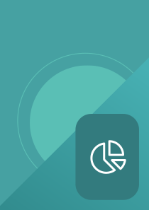
Analyses mobile network performance, coverage gaps, and reliability for users outside major urban centres using crowd-sourced and operator data.
Published 22 July 2024

Surveys consumer satisfaction, complaint rates, and switching behaviour across Australia's fixed broadband market to understand service quality trends.
Published 5 June 2024
Provides a regional breakdown of NBN connections by technology type — FTTP, FTTN, HFC, fixed wireless, and satellite — updated annually.
Published 12 February 2024
4.6 — Header, Footer & Hero variants
These organisms require full page context — open the templates to see them in situ.
hero--home
Homepage hero
Full-width centered layout. Heading, body, hero search box, and alert banner. Entrance animations on load. Device grid SVG left + right.
View home.html →hero--topic
Topic landing hero
Split layout: navy content panel left (breadcrumb, H1, body, search box) + brand-blue image panel right with parallax banner image and SVG device overlay.
View topic-landing.html →hero--topic (no image panel)
Resource library hero
Same hero--topic but left panel spans full width — no right image panel. Device grid SVG floats right with parallax. Gradient background.
View resource-library.html →4.7 — Resource library — filter toolbar, chips & pagination
Used on resource-library.html only. Toolbar collapses to stacked dropdowns on mobile, two-column grid on tablet, four-column single row on desktop.